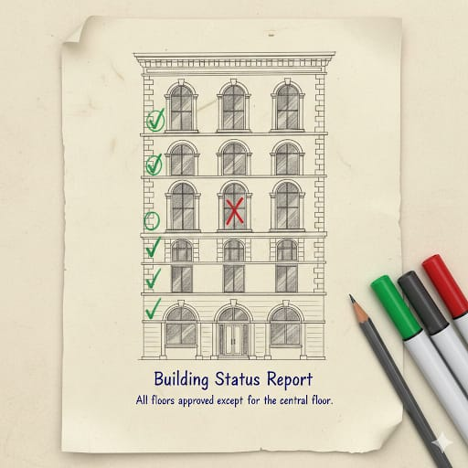

تحليل ثغره امنيه في اطار تحليل طالب تكنولوجيا المعلوماتيه
!عدم استعمال الهاتف كان السبب
العدو الاسرائيلي والامريكي استغل توجيه الامر بترك الهواتف
- حيث كان يقوم بهجوم الكتروني يسمى
- WARDRIVING
- واجهزة الكترونية تسمى
- SDR
تمكن من تحديد كل المباني والشقق في الجنوب او الضاحية وبالخصوص حارة حريك التي تم اطفاء الانترنت والاتصالات فيها حيث كان العدو يميز هذا المباني عن غيرها من خلال اشارات الاتصال والواي فاي،

مثال: يكون هنالك مبنى ويظهر لهم البيوت التي يوجد فيها واي فاي مثلا بأعطائها اشاره ضوء أخضر اما البيت الذي لا يوجد فيه واي فاي او اشارات تبدأ الشكوك فيه ويظهر ضوء احمر
وبالرغم من شكوك واحتمالات كثيره لهذا البيت ان يكن خالي من السكان او هنالك احد العسكر في داخله. تبدأ مهمه توظيف عميل على الأرض ان كان انسان يحيط بالمبنى او ناطور المبنى بذاته ليراقبوا عن قرب تحركات المبنه والطابق
:المختصر
بهذه الهجمات الالكترونيه يحجم العدو دائره الشكوك من خلال نظريه طرح مشكله ومعالجتها بعكسها